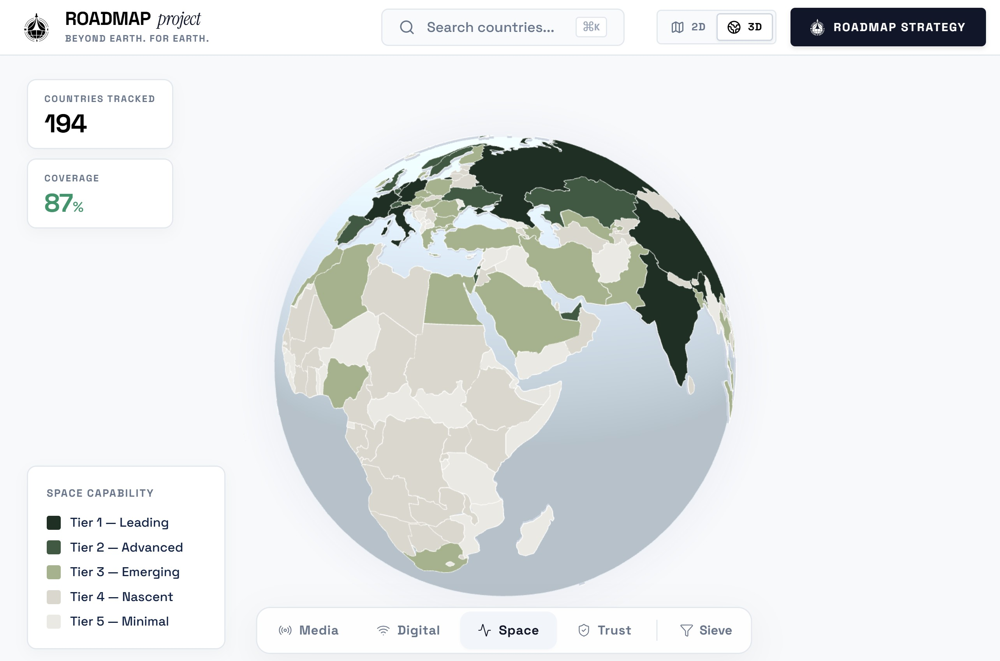

01The brief
Deep space human exploration is accelerating: lunar settlement plans within the decade, crewed Mars missions on visible roadmaps, multipolar competition and cooperation among ISECG members. What is missing is the public. Several authors and the ISECG itself have documented that the general public — the most consequential long-term stakeholder of deep space exploration — is largely absent from the strategic conversation. There is no shared narrative about why humanity will settle in deep space, no widely adopted communication framework, and no two-way mechanism to integrate public concerns about militarisation, equity, environmental impact, and governance.
The John Templeton Foundation funded this team project to build a global communication roadmap that addresses that gap directly. Building on the previous year's Cosmic Development Goals work (CDG 5 — SHARE: Society, Heritage, Awareness, Representation, Equity), our team was tasked with producing a coherent, actionable framework that could be adopted by space agencies, governments, NGOs, private companies, academia, international institutions, and investors across both established and emerging space nations.
02What I led
Within the team's three working groups (Strategy, Podcast, Report), I served as Report Head — lead editor of the final report. The role meant owning the document end-to-end: structure, voice, internal consistency, the narrative arc from problem statement through the analytical architecture to the demonstration outputs, and the integration of contributions from twenty authors with different disciplinary backgrounds and writing traditions into a single coherent voice.
Practically, that work covered the eight ethical commitments of the Report team's internal guidelines, the iterative review of every chapter against those commitments and expert outreach, the synchronisation between the Strategy team's analytical content and the Report team's narrative framing, and the editorial discipline needed to keep a 20-author document on schedule and at the quality bar a JTF-sponsored deliverable demands.
03The analytical architecture
The 4 risks the roadmap addresses
Public engagement in deep space exploration faces four structural risks. Perception: many people see space as an extravagant expense competing with urgent terrestrial needs. Communication: technical complexity and fragmented media environments make conveying what is at stake genuinely difficult. Ethics: space narratives risk being co-opted by corporations polishing their image or by frameworks that ignore traditional and underrepresented communities. Politics: without deliberate effort, narratives reflect the interests of the most powerful geopolitical actors. Every part of the roadmap is built to mitigate these four.
TEITAS as the ethical and narrative spine
TEITAS — Tangibility, Equity & Inclusion, Transparency & Accountability, Sustainability — is the four-pillar value framework that runs through every strategy. Developed via a structured think tank using a psychographic role-play method (rather than brainstorming, Delphi, or scenario planning, all of which were assessed and rejected for this purpose), the pillars were stress-tested against four personas grounded in universal human values to ensure they hold across cultures.
The 7 stakeholders and 4 national tiers
Long-term sustainability of public support requires every part of the ecosystem to play a specific role. The roadmap activates seven stakeholder groups: governments, NGOs, private companies, space agencies, academia, international institutions, and investors. It segments nations into four tiers based on World Bank GNI per capita and existing upstream/downstream space activity — Leaders, Advanced, Emerging, and Nascent — recognising that a Tier 1 space agency and a Tier 4 government do not face the same communication challenge.
The Sentiment-Knowledge Matrix (SKM)
SKM classifies global publics along two dimensions — what they know about space, and how they feel about it — into nine segments (Opponent, Skeptic, Critic, Unaware, Undecided, Curious, Supporter, Advocate, Enthusiast). The matrix lets the roadmap target communication to each segment's actual position rather than treating "the public" as monolithic. It is the targeting precision that the deficit model's aggregate framing cannot achieve.
The 5 functional layers
To organise contributions across disciplines, the roadmap groups them into five functional layers — Substance, Tangibility, Translation, Legitimacy, Delivery — moving from abstract data to tangible impact. Academia, agencies, and private companies build the first three; governments, NGOs, and international institutions provide legitimacy; investors build delivery.

04The 3-phase roadmap (15 years, 91 strategies)
Phase 1 — Awareness (Years 1–2, 37 strategies)
The first point of contact with the stakeholder ecosystem. Goal: shared understanding of why public engagement in deep space exploration matters. Tier Segmentation Briefings and GDP & Space Assets Country Overviews ground every stakeholder in their own ecosystem; the "Why Space Matters" Campaign Toolkit gives them a shared narrative anchor; Trusted Voices reach the audiences that institutional channels cannot.
Phase 2 — Education and Outreach (Years 3–8, 36 strategies)
From understanding to capacity. Two-Way Communication Channels replace one-way broadcast. The Support Feedback Loop Formula treats public support as a measurable function of perceived socioeconomic benefit, communication clarity, accountability, and intermediary engagement — diagnostic, not just descriptive. Standardised Educational Curricula, the SPEED 3E framework, the ReclaimingSTEM principles, and Crisis Communication Training are introduced at this phase.
Phase 3 — Long-Term Support (Years 9–15, 18 strategies)
Fewer strategies, greatest structural weight. Phase 3 institutionalises what came before. Real-Time Mission Dashboards with Blockchain Data Integrity. The Space Forum as the institutional heartbeat of accountability. The 4-Year Global Review Cycles. AI-Driven Sentiment Analysis as continuous early-warning. The Resource Extraction Limits Framework and the Resource Management and Data Sovereignty Framework anticipate the in-situ resource utilisation era.
The strategies are deliberately front-loaded and 89% (81 of 91) apply universally across all four national tiers. Only ten are tier-specific. The universality figure is the clearest quantitative expression of the roadmap's commitment to leaving no nation behind.
05Three demonstration outputs
Chapter 6 of the report demonstrates that the architecture works through three publicly accessible outputs.
The Roadmap Project Tool
An interactive web application that translates the 91-strategy matrix into country-specific recommendations for any practitioner, in any of 194 countries, at no cost. Three components: a country classification system evaluating each nation across seven dimensions; a strategy engine that generates recommendations adapted to country, role, and local communication environment; and a stakeholder directory of 200+ verified organisations across 7 institutional categories. The interface includes a 3D globe, a scenario studio, and an evidence panel showing the data and sources behind each assessment. Database is designed for live replacement as the 4-year review cycles in Phase 3 update inputs.
"Beyond Earth. For Earth." campaign
The unidirectional creative communication concept that operationalises the Phase 1 and Phase 2 awareness strategies. A "Split Lens" visual identity: every execution divided down the centre, a high-fidelity space scene on the left and an everyday application of space-derived technology on the right. Two waves: Wave 1 (Phase 1) targets Opponent and Unaware audiences via short-form video and outdoor placements; Wave 2 (Phase 2) targets Supporter and Undecided audiences via long-form documentary and podcast content with two-way mechanisms.
"Why Space Matters" video podcast
The conversational output. An expert dialogue series that bridges Phase 1 awareness and Phase 2 education by modelling the two-way communication TEITAS principles demand. Pilot episodes recorded with Dr. Pascale Ehrenfreund and Dr. Walter Peeters; full equipment list and methodology in the report appendices.

Try the Roadmap Project Tool →
06Why this work matters
The communication problem this roadmap addresses is the one that determines whether deep space human exploration retains social licence to operate over the next half century. Public reliance on space systems is growing faster than public participation in the decisions that shape them — and that asymmetry is unstable. The framework we built does not solve communication once; it provides a structured, measurable, adaptable architecture that lets every actor in the ecosystem play their role explicitly, with shared values and coordinated phasing.
For a Report Head, the project also exercised a particular discipline I value: editing twenty authors into a single coherent voice without flattening the substance, while keeping the document on a JTF-sponsored timeline. The same skill — turning fragmented contributions from a multi-stakeholder team into one auditable deliverable — is what programme management at agencies and primes ultimately requires.
07IAC 2026
The team's paper based on this work was accepted for presentation at the International Astronautical Congress 2026. Authorship and the exact accepted title are managed at the team level.